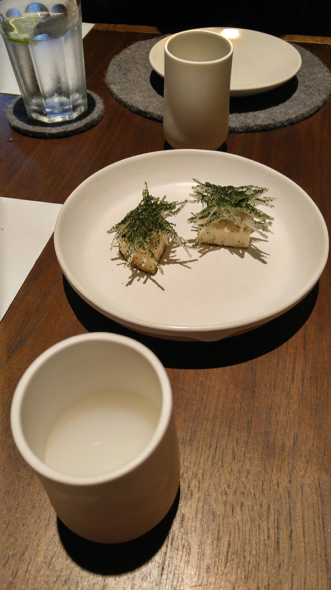
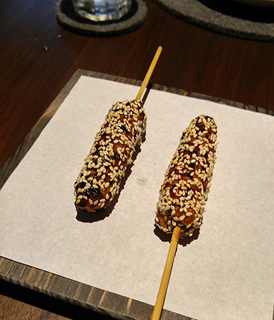
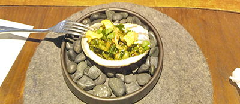
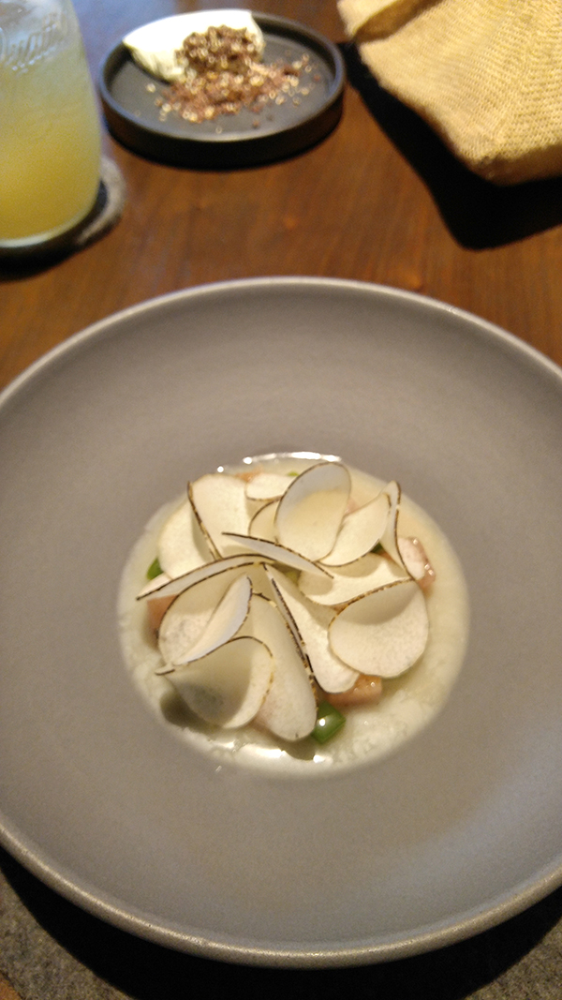
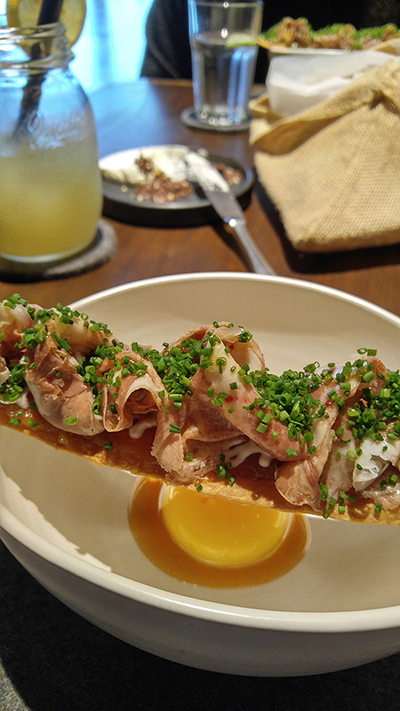
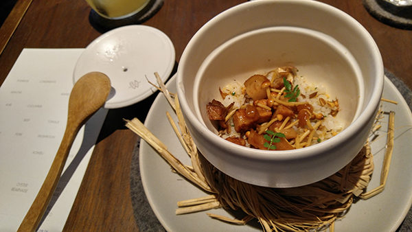
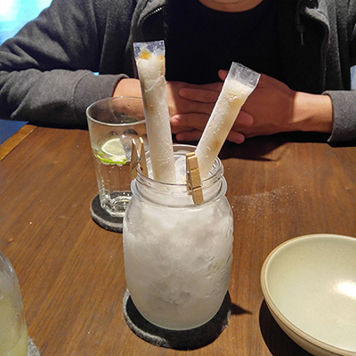

2016年RAW餐廳-第四季特選菜單
這是2016年第一次到RAW餐廳用餐，第一次就是吃年終特集，覺得相當的奢侈啊！
首先上的是清粥小菜，不一樣的是，這個清粥是打成非常滑潤的微甜米漿，混著整塊淡淡醃漬過的大頭菜，真的把平常的清粥小菜用心的方式呈現了！
接下來的烤玉米也是創意重組後的！不知道大家吃烤玉米的時候會不會覺得心沒有辦法吃，很不過癮？這邊的玉米心是一整根玉米筍！然後上面玉米粒是廚房裡一顆顆黏上去的，是超級手工藝品啊！
好吃的烤九孔，用九層塔跟雪莉酒來炒，再放回原本的殼中。
筊白筍薄切放在生的鯖魚碎塊上，再加上高湯，很衝突卻有趣的一品。
接下來是名副其實的「牛舌餅」，在牛舌餅上放滿滿滿的生牛舌，再沾著碗底香濃的生蛋黃一起吞下肚，都不知道吞下的是牛舌還是自己的舌頭啦！
滷肉飯可以怎麼變形呢？用特製的飯缶燒出鍋巴來，上桌時滋滋作響，配上細碎的山間菇類以及噴香滷肉塊，讓平常濕黏的滷肉飯多了一股爽利的香氣！
最後以清爽的鹹楊桃剉冰條收尾，像兒時記憶一般的趣味，拿著細細的塑膠條，每個人不吸到最後一點就像不過癮！
第一次的RAW之行，可以說吃得相當滿意。江振成的創意，把許多我們習以為常的台式風味變出新的花樣，也更見精緻與深度。稱他是台灣料理界的第一跨界藝術家也不為過啊！期待下次再度造訪 :D！